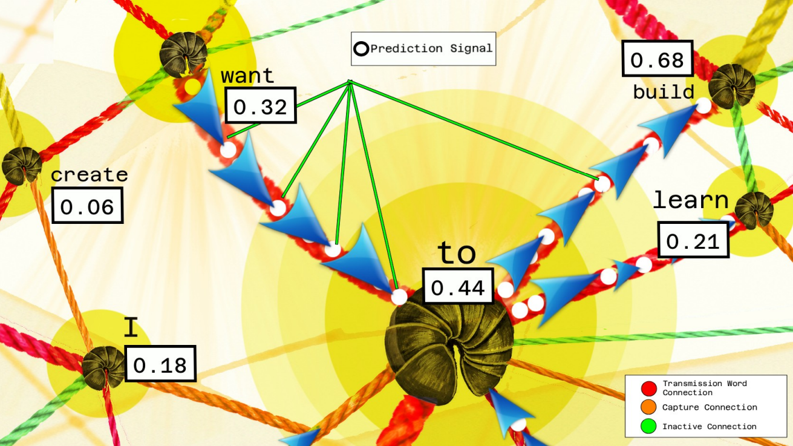

最新进展

当您无法想起确切的词语时，建议应比以往更加个性化
我一直在研究现代基于 n-gram 的预测技术的预测能力，包括开源和闭源系统。在此过程中，我对一个更大的变革机会，以及将 IntentSpider 与华为 Celia Keyboard（小艺输入法）结合使用的可能性产生了浓厚兴趣。华为的文档指出，Celia Keyboard 支持预测词建议、语音输入、流畅手写、170 多种输入语言以及手势输入。这使它成为对此类研究特别有趣的多输入方式环境。现代触屏文字输入背后也有一段重要的人机交互（HCI）发展历史。Google 人机交互研究科学家 Shumin Zhai 与现任剑桥大学交互系统工程教授 Per Ola Kristensson 在 IBM 发起并领导了 SHARK／ShapeWriter 研究。Kristensson 于 2007 年联合创立 ShapeWriter, Inc.，将手势键盘技术商业化。ShapeWriter 于 2008 年获得 Google Android ADC50 开发者奖，并于 2010 年被 Nuance Communications 收购。Zhai 于 2011 年加入 Google。这段历史对我很重要，因为它说明基础的人机交互文字输入研究如何从研究原型走向广泛部署的输入技术。对于 IntentSpider，我的意思是：如果一个人记得与某个名称有关的许多细节，但在那个时刻想不起名称本身，键盘就可以利用这些已经记得的词语连接，在它们有助于预测用户意图中的下一个词时支持记忆回想。这同一份个人记忆随后也可以在人通过语音听写或使用触控笔手写时继续发挥作用，而不只是对一种打字方式有用。如果用户纠正一次名称，我还希望这项纠正在同一名称相关的其他输入方式中发挥作用。这只是一个例子。如果记得某个事物周围足够多的信息，就已经足以再次找到并表达那个词，会怎么样？
如果记得某个事物周围足够多的信息，就已经足以再次找到并表达那个词，会怎么样？
根据已经形成的连接作出上下文感知决策
我们举一个例子。您正在写：“我们在车站附近那家披萨店见吧，就是会议结束后我们去过的那家。”在这种情况下，您记得那个地方，记得那是一家披萨店，也记得车站和会议，但在那一刻，那个地方的实际名称却从您的脑海中消失了。我希望这些已经记得的片段能够在您仍在书写时引导系统回到“RedApplo”，而不需要您离开这段对话，再去搜索旧对话或上下文。
实现这一点的一种可能性，是用用户实际选择纳入的文本引用来扩展个人图。IntentSpider 已有的几个部分，包括扇形扩散（fan dispersion）算法和扩散（diffusion）过程，已经提供了可用于对此目的进行测试的机制。如前所述，“pizza”一词可以提供一条路径，“station”一词可以提供另一条路径，会议也可以提供另一条路径，而这些不同的路径仍然都能到达同一个个人地点。候选项还可以保留支持它的原始短语，因为我认为系统保留某个连接为何存在的信息很重要。如果两个不同的地点都满足同样的已记得信息，可以再使用一条可选线索来区分它们。系统还需要保留两者的区别：一种连接是真正从用户的信息中回想起来的，另一种是系统正在作出的猜测，因为这两者并不相同。
还有一种我认为很重要的可能性：这些路径也应能够跨越语言。例如，一个人可能记得一段中文描述，相关对话可能是用英语进行的，而实际的地名可能是俄语。即使这些表达使用三种不同的语言，它们仍然可以指向同一份个人意义，而且通常还共享许多其他属性。大型通用 NLP 系统可以处理多语言语义，但在轻量级个人记忆系统所需的微观尺度上，维护许多相互连接的个人图结构并持续更新跨语言关系，可能会产生高昂的计算成本。它可能需要相当大的计算预算，而每台设备或每位用户的成本可能变得很重要。因此，轻量级本地系统有充分理由使这些操作保持高效，并避免无意中把一个简单操作变成成本高得多的操作。如前所述，将所有这些片段连接到同一个引用，可以使它们共同发挥作用。学生可以利用这项技术找回医学教科书中的专业术语。工程师可以使用同样的思路找回零部件的名称。我的意思是，在那一刻仍存在于一个人脑海中的词语，可以成为找到当前缺失词语的路径。
涉及不同输入和输出方式的使用场景
现在考虑语音输入。您说：“我们可以再去……”这时，“RedApplo”可以以淡色出现在识别文本旁边。您想起这就是那个名称，说出它，然后继续句子。我不希望这需要再次停顿或再次点击，因为如果一个人必须停下句子才能操作记忆系统，这本身就变成了另一种打断。手写时，同一份个人记忆也可以在已识别的词语旁边提供后续建议。核心思路很简单：如果在一个人打字时已经学到了有用的信息，我希望当他开始说话或手写时，同样的信息仍然有用。
华为现有的语音和手写系统将继续处理实际的语音识别与手写识别。IntentSpider 可以接收这些系统生成的文本，然后提供相关的个人候选项。IntentSpider 是处理层中的引擎，不需要依赖某一种特定的识别模型。宿主系统可以使用基础语音转文本引擎，也可以使用较新的闭源语音模型。IntentSpider 可以在任一模型产生的识别文本上运行。识别器的处理时间仍会影响完整的端到端用户体验，但它与 IntentSpider 自身的预测运行时间是分开的。我会创建一个称为“Capcom”的主控制层，协调 IntentSpider 与相关语音或手写模型之间的通信，包括冲突与错误处理。Capcom 应决定某种建议提示（例如低不透明度的建议状态）在当时是否有用、应保留多长时间，以及何时消失。它还应防止预测无限期显示，并检测用户何时有意忽略或拒绝它。IntentSpider 目前没有明确的机制来区分被拒绝的建议与不准确的预测。未来的集成可以加入轻量级的拒绝和相关性信号，根据选定的设计，可能使用检索或向量相似度，并利用该信号调整未来显示决策的置信度。简单的分词与元数据门控可以使该层保持轻量，而不是反复将不必要的复杂对象传过系统。此部分之所以重要，是因为如果原本应帮助人继续句子的提示开始分散其对句子的注意力，那么它就违背了系统的目的。我将此视为推动当前 IntentSpider 键盘研究走向商业可用产品的下一步之一。
让一次纠正在其他位置发挥作用，并将其与其他预测事件关联
这是另一个通过与 IntentSpider Webnet 完整集成、真正改善另一模型能力的方向。设想一个标识符或名称被错误识别，而用户纠正了一次。我想研究同一项纠正能否在打字、说话及手写时都可用，而不需要用户反复作出同样的纠正。这可以是由 Capcom 层协调的另一逻辑过程，但它需要一种专门机制，以检测重复形式、保留预期名称并保存纠正周围的相关上下文。用户可以拥有诸如“在这个项目中使用此名称”“为以前的工作保留旧名称”“忘记这个连接”等控制。这些可以成为对个人记忆更为精确的控制。这里也有一个难以处理的边界：一个项目的纠正不应自动改变不相关的项目。与某个人相关的纠正不应与另一个人混在一起，不相关的私人对话也应保持不相关。因此，将纠正传递到不同输入方式只是问题的一部分；维持纠正周围的正确边界是另一部分。这可以充当改变当前活动上下文桶的上下文分隔器。由于这也需要持久状态，IntentSpider 非常适合探索这一方向，但这项功能目前并未在 IntentSpider 中提供。

IntentSpider 引擎的当前状态以及进一步实验与验证
已发布的 C++ IntentSpider 引擎已经能够构建和更新个人词语图，并将上下文构建、排序、建议显示以及从用户文本中学习分开。它还可以保存图状态并再次加载该状态。对于这项研究，另一个特别有用的部分是，连接角色可以区分保存在图中的关联与实际传递预测影响的关联。因此，在当前引擎中已经有不同的位置，让我能够改变如何到达某份记忆、该记忆是否应影响某个候选项，以及随后该候选项是否应实际显示给用户。
在与 2026 年国际人机交互会议相关的论文所报告的实验验证中，IntentSpider 在 1,000 个持续更新事件中取得了 25.4% 的 Top 3 精确目标词准确率。该评估从一个包含 40,096 次观测的已记录图开始。我还进行了独立的 50 事件桌面测量，其中从键盘输入经过预测到建议显示的中位时间为 2.4 毫秒。我需要说明的是，这些仅是现有引擎的起始测量，并不代表这里描述的拟议记忆系统的结果。请参阅论文中完整的实验与验证部分。（IHCI 最终论文）。
Runtime RedApplo 测试
我将此次运行称为“Runtime RedApplo”，因为它包含本次运行中最强的个性化结果。在 434.85 秒、8,768 个源帧中，此次运行包含 398 个不同的稳定建议状态。
在录制视频的第 179.205 秒，RedApplo 在被输入之前作为排名第 1 的建议出现。这一点很重要，因为这一结果并不限于常见的功能词。原始运行记录了引擎在持续交互中呈现一个个人名称的过程。
在这些选定的时刻，对我而言重要的是，RedApplo 这一名称在输入文本时出现在实际的建议栏中。这为我们下一次实验提供了具体的起点。同一种个人候选项能否在语音或手写旁边也发挥作用？上面的两个动画展示了我想研究的交互方式。
预测事件记录表 下载
视频分析笔记 下载
已录制的源视频片段
如何将 IntentSpider 与华为 Celia Keyboard 等系统连接
华为文档列出的 Celia Keyboard 功能包括预测词建议、语音输入、流畅手写、170 多种输入语言以及手势输入。这意味着底层输入系统已经存在，这在现阶段是一个重要优势。我希望研究的机会并不是重新创建所有这些系统，而是能否在这些体验间共享同一个个人记忆组件，使在一种输入方式中学到的有用个人信息，在使用另一种输入方式时不必从零开始。拟议的连接方式是：宿主提供文本上下文和已确认的编辑，Capcom 协调过程，IntentSpider 返回个人候选项，Capcom 决定是否以及在何处显示下一词提示。只有人类确认的文本才应返回学习路径。最后一点很重要，因为显示建议不应让系统学到用户实际上已经说出了该建议。
第一版计划
对于第一版，可以由一个适配器向 IntentSpider 引擎提供已提交文本，并将候选项返回到另一个界面。语音需要谨慎处理，因为在语音系统仍在判断实际说了什么时，识别转录文本可能发生改变。临时猜测不应像用户已经确认过这些词语一样，成为已学习的个人历史。在第一种连接正常工作后，利用多个不完整线索及跨语言连接进行更丰富的记忆找回，可以成为一个更大的扩展。与图形键盘上的文字输入不同，语音识别和听写可能受益于仅在置信度充分时，或必要性门控（necessity gating）过程表明提示值得显示时，才显示建议提示。必要性门控被设计用来控制已排序的词是否真正显示，这与随笔中描述的担忧直接相关。IntentSpider 应避免通过反复显示配置不佳或低置信度的预测来影响一个人的表达。在将本地个人系统与大规模整理上下文、然后向设备返回预测的方法进行比较时，这尤其重要。
我会从一个英文名称的个人库、用户主动选择启用的本地历史记录，以及位于识别文本旁边的界面开始。首先，我想测量现有预测路径是否真的能在一个人想不起确切名称时帮助其继续表达。随后，我可以加入从不完整线索进行检索的能力，并将其与现有 IntentSpider 建议和在个人历史中进行简单搜索的方式进行比较。我想测量名称是否成功找回、发生多少次打断、是否必须反复进行同一纠正，以及显示了多少错误提示。我还需要测量目标设备上的延迟、内存使用和能耗。
对于华为，我认为潜在价值在于减少这样的时刻：一个人仅仅因为在那一刻缺失某个特定的个人词语或名称，就不得不停止表达自己正在试图表达的内容。同样的个人学习也可以在多种输入体验中发挥作用，而不仅限于一种输入模式。在进行任何产品集成之前，我们需要大量测试、安全审查及其他检查。专门为华为 Celia Keyboard 制作的原型，甚至在 API 访问可用且获得许可的情况下为较旧版本制作的原型，也可以结合若干第三方组件。例如，可以使用提供商 A 的语音模型、提供商 B 的上下文分隔器，以及作为宿主协调完整系统的定制 Capcom 层。即使针对已弃用的版本，华为内部架构的高层级、非机密文档也会让原型开发更准确。原型可以先展示这一价值是否真正存在，再由华为团队投入规模更大的集成。华为工程师的支持也会加快从研究走向生产级系统的过程，并具有极高的价值。
我将非常感激能就第一次实验开展技术讨论。我可以带来现有 IntentSpider 引擎的演示以及我的国际人机交互会议演示视频，准备原型，然后分享结果。我的电子邮箱是 nekshadesilva@gmail.com。另一种联系方式是 IntentSpider 联系表单 intentspider.nekshadesilva.com/contactform。IntentSpider 更广泛的目标和潜在益处要大得多，但我想回答的第一个问题非常具体，尽管它在技术上很复杂。一个本地计算机程序怎样才能帮助人找回他想表达的词，而不中断其思维的上下文，同时保持在他已经提供的上下文范围内？（点击此处进入研究预览、 IHCI 演示文稿、 IntentSpider Engine 源代码）？